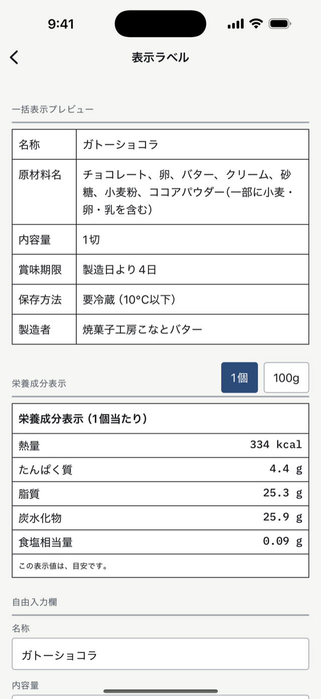
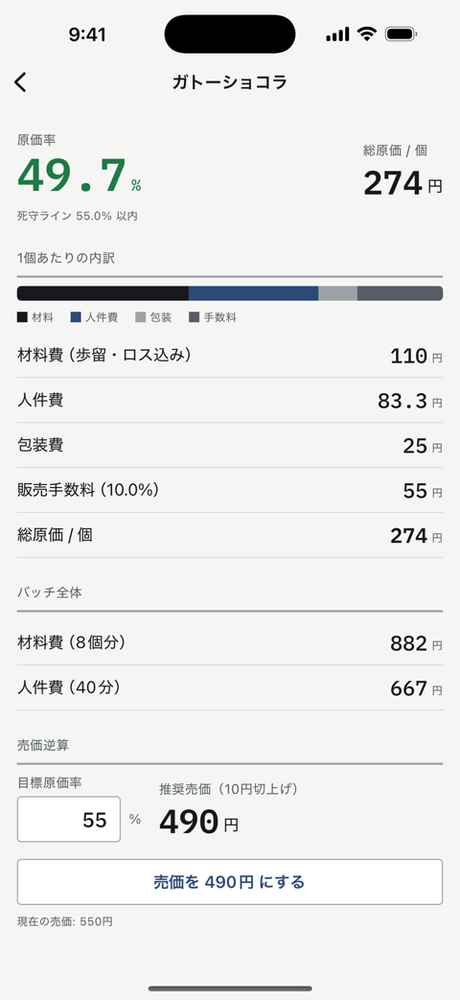
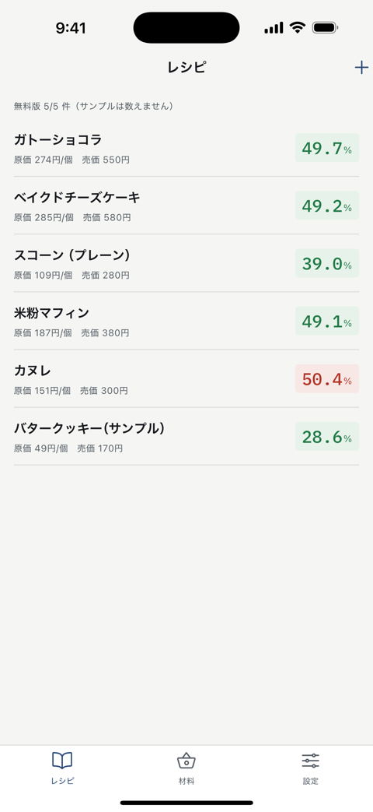
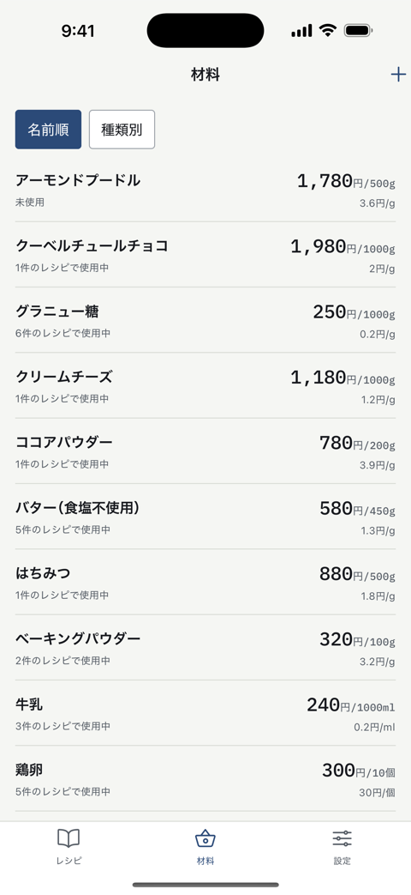

お菓子・パンを、自分で売っている人へ
レシピを1回だけ入れると、 原価・原価率・売価と、そのまま印刷できる 食品表示ラベル（原材料名と栄養成分）が、同時に出ます。
クッキー、焼き菓子、ケーキ、パン、スイーツ。自宅の工房から、委託販売・マルシェ・ネット販売まで。 副業ではじめた方から、開業したばかりの製菓・ベーカリーの方まで。iPhone用のアプリです。
買い切り ¥1,500 ／ 月額（サブスク）はありません
入れるのは1回だけ
材料の値段と内容量、配合、出来高（何個できるか）、作業時間。
① 原価と値段
材料費・人件費・包装費・販売手数料を全部入れた総原価。1個あたりの原価率と、 「この原価率を守るなら、いくらで売るか」の売価。
② 食品表示ラベル
名称・原材料名（重量の多い順）・アレルゲン・栄養成分表示。 A4のラベルシールに面付けしてPDFで書き出せます。
まず、数字で
型抜きクッキーを30枚焼いて、1枚180円で委託販売（お店に置いてもらう）した場合です。 下の数字はすべて、アプリと同じ計算エンジンを実行して出した実際の値で、 手で打ち込んだものではありません。
型抜きクッキー ／ 30枚 ／ 1枚あたり
では、いくらで売ればいいのか
原価率を50%までに抑えたい、と決めた場合の売価です。 委託の手数料は「売価の30%」なので、売価を上げると手数料も一緒に増えます。 だから「原価の2倍」では計算が合いません。
同じクッキーなのに、直販190円と委託470円で2倍以上ちがいます。 委託で売るものと直販で売るものが同じ値段でいいはずがない—— これが材料費だけの計算では絶対に見えない結論です。 計算の全部をこの記事で追えます →
なぜ安く出るのか
「よく売れているのに、お金が残らない」の正体はここにあります。 1枚180円のクッキーで、足していくとどうなるか。
1段目
材料費だけ
25.0円
袋の値段を、使った量で割っただけ。原価率は 13.9%。ここで止めてしまう人がいちばん多いところです。
2段目
＋ 歩留まりと製造ロス
26.6円
歩留まり ＝ 買った量のうち、実際に生地へ入る割合。卵の殻や果物の皮は捨てるので、そのぶん多く買うことになります。 製造ロス ＝ 割れ・端切れ・焼き損じで売り物にならなくなる分。この例は5%。 買う量は増えるのに、売れる数は増えません。原価率 14.8%。
3段目
＋ 人件費（自分の時間）
81.6円
90分の作業を時給1,100円で数えて、30枚で割ると1枚55円。 いちばん大きいのに、いちばん忘れられる費目です。原価率は一気に 45.3%へ。 原価ノートは人件費を「あとで足すおまけ」ではなく、 最初から原価の一部として計算します。
4段目
＋ 包装費と販売手数料
147.6円
袋とシールで12円、委託先の手数料が売価180円の30%で54円。 合計147.6円、原価率82.0%。 1枚売って手元に残るのは32.4円で、これは粗利 ＝ 売った値段から原価を引いた残りです。
数値は ブラウザで動く原価計算ツールと同じエンジン（アプリの計算コードそのもの）で生成しています。 自分のレシピの数字を今すぐ試したい方は、そちらをどうぞ。アプリを入れなくても無料で使えます。
いちばん怖いところ
原材料名を書き出して、多い順に並べ替えて、アレルゲンを拾って、 栄養成分を計算して……を手作業でやると、何度やっても不安が残ります。 原価を入れたレシピから、そのまま出しました。

法令が求める並び順です。配合を直せば順番も直ります。 仕込み（アーモンドクリームなどの中間レシピ）を使っている場合は、 「名称（内訳…）」の形でかっこの中に展開されます。
対応は29品目。表示義務のある特定原材料9品目 （えび・かに・くるみ・小麦・そば・卵・乳・落花生・カシューナッツ）と、 表示がすすめられている20品目です。2026年4月施行の改正で カシューナッツが義務に上がり、ピスタチオが追加された現行のリストに合わせています。
日本食品標準成分表（八訂）から配合量で計算します。成分表はアプリに入っているので、 通信はいりません。「1個当たり」と「100g当たり」を切り替えられます。
面付け ＝ A4の1枚に何枚ぶんを並べて印刷するか。 A4・12面（エーワン72212等）、A4・24面（同31540等）、単票の3つ。 シールの実寸には栄養成分の枠まで入らないので、 12面・24面は一括表示だけ、栄養成分まで入れるときは単票という分け方です （実寸で確かめてあります）。 印刷するときは倍率100%（原寸）を指定してください。「用紙に合わせる」だと位置がずれます。
栄養成分の値は、八訂の成分表から計算した推定値です。 これは食品表示基準がきちんと認めている方法で、分析機関に検査を出さなくても表示できます。 その代わり「この表示値は、目安です。」の一文を近くに書くことが条件なので、 アプリはこの一文を必ず枠内に入れます。消し忘れは起きません。
計算の根拠（どのレシピを、どの配合で、どのデータベースから計算したか）は 保管しておく必要がありますが、アプリに入れたレシピそのものがその根拠になります。
ただし、表示の最終的な責任は販売者であるあなたにあります。 必要な表示の項目は、販売の形態（対面か、包装して置くか、通信販売か）や 自治体によって変わります。売り始める前に、最寄りの保健所に一度確認してください。 原価ノートは、計算と印字を手伝う道具に徹しています。
ほかの画面
飾りは入れていません。原価率は大きく、桁がそろう字で。 死守ライン（自分で決めた「ここまで」の原価率）を超えると色が変わります。



バターが上がった日に、レシピを1本ずつ開いて直す必要はありません。 材料画面で1回直せば、そのバターを使っているケーキもクッキーもパンも、 原価率と推奨売価がその場で計算し直されます。
表をコピーして、アプリの入力欄に貼るだけ。ファイルの書き出しも、 転送も、文字コードの調整もいりません。CSVファイルからの取り込みもできます。 （どちらも無料の範囲です）
お金のこと
無料
¥0
原価ノート PRO
¥1,500 買い切り
食品表示の法令は変わります。改正への追従は、 月額をいただくのではなく無料のアップデートで行う方針です。
よくある質問
購入したときと同じApple IDでサインインした状態で、 設定タブ →「Pro」の「Proを購入 / 復元」→「以前の購入を復元」 を押してください。
購入はApple IDに紐づいているので、機種変更しても、アプリを入れ直しても引き継がれます。 追加の料金はかかりません。それでも戻らない場合は、下の連絡先へご連絡ください。
総原価（1個あたり）＝ 材料費 ＋ 人件費 ＋ 包装費 ＋ 販売手数料 です。
材料費は「購入価格 ÷ 内容量 × 使う量 ÷ 歩留まり率」を全部の材料で足し、 それを「1 − 製造ロス率」で割ります。人件費は「作業分 ÷ 60 × 時給」。 販売手数料は「手数料率 × 売価」なので、売価を上げると手数料も増えます。
売価の逆算は「（材料費 ＋ 人件費 ＋ 包装費）÷（目標の原価率 − 手数料率）」。 手数料率が目標の原価率以上だと答えが存在しないので、その場合はその旨を出します。
栄養成分の値は、文部科学省「日本食品標準成分表（八訂）」から計算した推定値です。 食品表示基準が認めている方法で、「この表示値は、目安です。」が常に併記されるので、 分析機関に出さなくても適法に表示できる形になっています。
ただし表示の最終責任は販売者（あなた）にあります。 販売の形態によって必要な表示は変わりますので、迷ったら最寄りの保健所や 消費生活センターに確認してください。
いいえ。アレルゲンは、材料ごとにあなたが設定した内容がそのままラベルに反映されます。 アプリが材料名から推測することはありません。
原材料の袋に書かれている表示を見て、材料画面で設定してください。 設定した内容は、その材料を使う全レシピのラベルに反映されます。 なお、材料CSVの取り込みではアレルゲンは変わりません（材料画面で設定します）。
いりません。アカウント登録はなく、計算はすべてiPhoneの中で動きます。 八訂の成分表もアプリに入っています。通信を使うのは、App Storeでの購入処理と、 あなた自身のiCloudへの同期だけです。工房に電波が入らなくても計算できます。
レシピ・材料・時給の設定は、同じApple IDのiCloudへ自動で保存されます（無料）。 新しいiPhoneでアプリを入れて、設定タブの「今すぐ同期」を押せば戻ります。
iCloudの中でも、開発者からは見えない・触れないあなた専用の領域に置かれます。 念のため、設定タブから「バックアップを書き出す」でファイルとして控えておくこともできます。
ぜひ教えてください。材料の購入価格・内容量・配合量と、 アプリに出ている値を書いて送っていただければ、手計算と突き合わせて確認します。
いちばん多いのは、材料の単位（g・ml・個）が配合の単位と食い違っている場合と、 歩留まり率が100%以外に設定されている場合です。
サポート
質問・不具合の報告・計算や表示の指摘は、こちらへどうぞ。
個人で作っています。全部読みます。返信に1〜2日いただくことがあります。 「こういう表示項目が要るのに出せない」「この材料の八訂の食品番号が分からない」など、 使っていて詰まったことも歓迎です。
プライバシーポリシー（何も収集していません）
無料で読める・使える
材料と出来高（何個できるか）を入れるだけで、1個あたりの原価・原価率・ おすすめの売価が出ます。製造ロス・人件費・販売手数料まで入った、アプリと同じ計算です。 インストールも登録も不要です。
このページに出てきた4つの理由（歩留まり・製造ロス・人件費・委託手数料）を、 材料の表から売価の逆算まで、一つも飛ばさずに計算します。 値付けに迷っている方はこちらから。